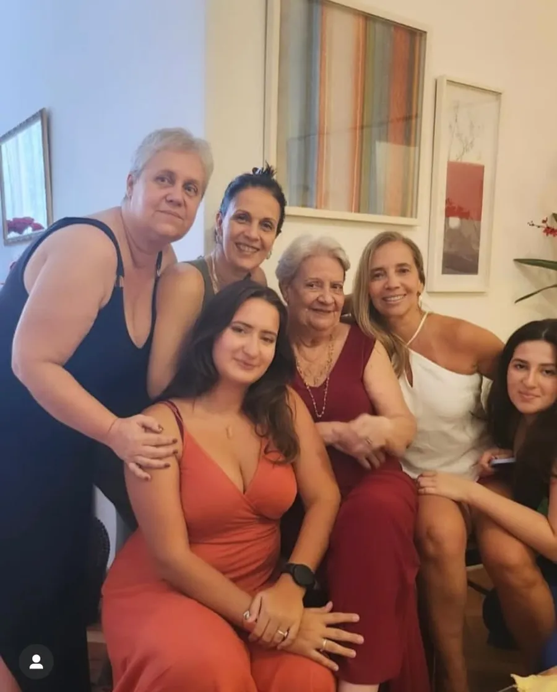
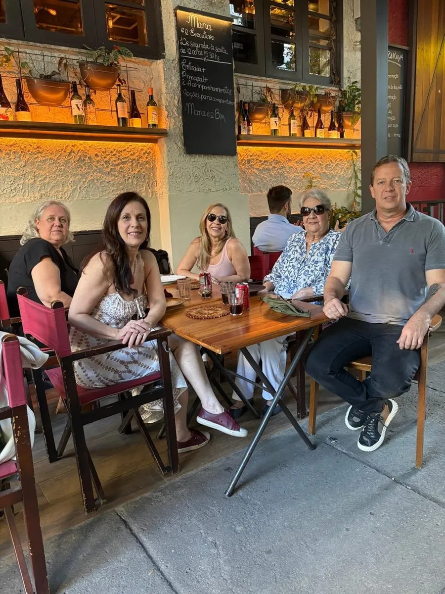

Reabilita em CasaFundadora
Reabilita em CasaFundadoraFisioterapeuta · Fundadora
Andréa Rangel
Mobilidade e independência da pessoa idosa.Há 25 anos, ela ajuda idosos e famílias a escolher o apoio certo, recuperar movimentos e viver com mais segurança dentro de casa. Avalia, indica, trata e ensina, sempre olhando para a rotina real de cada pessoa.
O que ela faz
Três formas de cuidar do mesmo objetivo.
Que a pessoa idosa continue fazendo, sozinha e com segurança, aquilo que dá sentido ao dia dela.
Indica o apoio certo
Antes de qualquer locação, Andréa avalia força, equilíbrio, dor, rotina e a estrutura da casa. Só então indica o modelo, ajusta a altura e ensina a usar.
Para famílias que vão alugar andador, bengala, cadeira de rodas ou cama.
Ver equipamentosTrata em casa
Fisioterapia geriátrica, traumato-ortopédica e neurológica no domicílio, com uma equipe liderada por ela. Avaliação detalhada, plano individual e treino de marcha.
Para quem se recupera de queda, fratura ou cirurgia, ou quer manter a força.
Ver a fisioterapiaEnsina quem cuida
Toda semana, transforma o que vê nos atendimentos em orientações práticas no Instagram e no YouTube. E reuniu o essencial no Guia prático do andador.
Para idosos, filhos e cuidadores que querem acertar no dia a dia.
Ver os guiasComo ela trabalha
Nada no achismo. Tudo a partir da pessoa.
Cada indicação nasce de uma escuta atenta e de uma avaliação, nunca de um modelo padrão.
Escuta
Entende a rotina, a casa e o que a pessoa quer voltar a fazer.
Avalia
Força, equilíbrio, marcha, dor e os riscos de queda do ambiente.
Indica e ensina
Define o apoio ou o tratamento e treina o movimento correto.
Acompanha
Orienta a família e ajusta o plano conforme a evolução.
Trajetória
A reabilitação acontece onde a pessoa vive.
Comunicativa, de bem com a vida e apaixonada pela fisioterapia, Andréa construiu a carreira dentro das casas dos pacientes. Entre corredores estreitos, tapetes, degraus e banheiros apertados, aprendeu o que nenhum consultório ensina.
Dessa vivência nasceram duas frentes. A fisioterapia domiciliar, com uma equipe que acredita que o segredo da recuperação está na conexão entre fisioterapeuta e paciente. E a locação de equipamentos, criada para que nenhuma família precise escolher um andador, uma bengala ou uma cadeira de rodas sem orientação.
Hoje, ela também ensina. No Instagram e no YouTube, transforma o que vê todos os dias em orientações para idosos, familiares e cuidadores.
Formação
Ciência a serviço da autonomia.
- Pós-graduação em Gerontologia (em andamento)Faculdade do Hospital Sírio-Libanês, São Paulo
- Pós-graduação em Mobilização NeuralTécnicas que tratam a dor e a mobilidade pela via do sistema nervoso
- Pós-graduação pela Universidade Gama FilhoRio de Janeiro
Para quem
Quem ela atende.
- Pessoas idosas que querem manter a independência
- Filhos que vão escolher um andador ou uma cadeira
- Cuidadores que sentem o peso de ser o apoio
- Quem se recupera de queda, fratura ou cirurgia
- Pessoas com condições neurológicas
- Quem tem medo de cair e passou a se mover menos
O que ela acredita
Quatro ideias que guiam cada atendimento.
Deixe fazer.
Preparar o próprio café, ir até o elevador, subir um degrau com apoio. Sempre que for seguro, a pessoa idosa deve fazer sozinha. Proteger demais também tira força, equilíbrio e autoestima.
Nada no achismo.
Andadores, bengalas e muletas não são escolhidos ao acaso. O modelo, a altura e o jeito de usar saem de uma avaliação, e o treino de marcha é parte do tratamento.
Queda não é destino.
A maioria das quedas é evitável e acontece dentro de casa. Luz, apoio adequado e força nas pernas mudam essa história.
Equipamento é liberdade.
Usar cadeira de rodas para passear não é piorar. É continuar indo à praia, ao médico, ao almoço de domingo. O apoio certo amplia a vida.
Na vida real
Ela também é filha.
Quando a mãe sofreu uma queda e fraturou o braço, foi Andréa quem conduziu a fisioterapia.
“Ela reclama, inventa desculpas para não fazer, mas depois que faz, gosta. Você não precisa colocar foco no que não gosta. Precisa focar na sua transformação.”


Onde acompanhar
Conteúdo para quem usa e para quem cuida.
Mais de 36 mil pessoas acompanham as orientações da Andréa sobre andador, bengala, cadeira de rodas, quedas e autonomia.
Uma conversa com a Andréa muda o plano.
Seja para alugar um equipamento ou iniciar a fisioterapia em casa, comece pelo WhatsApp.